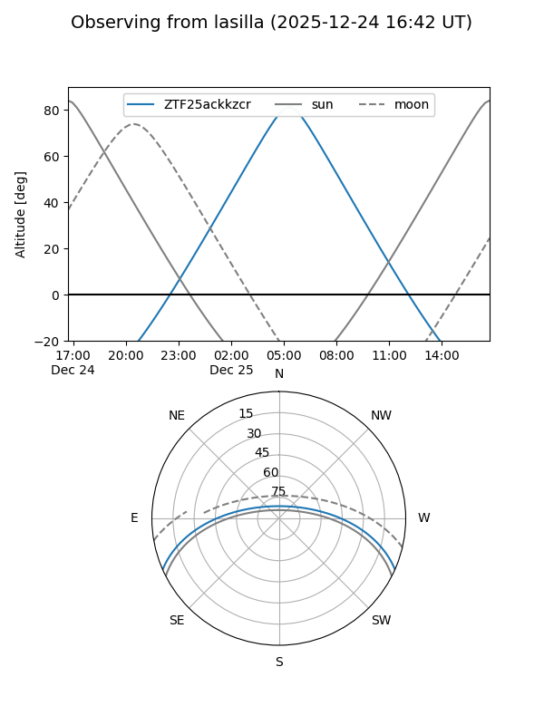
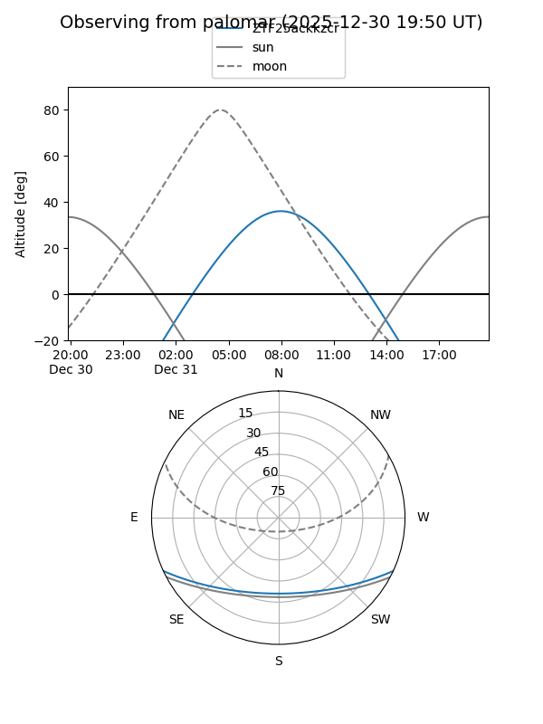

ZTF25ackkzcr
Target ZTF25ackkzcr at 2025-12-24 16:55
Aliases and brokers:
FINK: fink-portal.org/ZTF25ackkzcr
Lasair: lasair-ztf.lsst.ac.uk/objects/ZTF25ackkzcr
ALeRCE: alerce.online/object/ZTF25ackkzcr
alt names
ZTF25ackkzcr (ztf,fink_ztf)
Coordinates:
equatorial (ra, dec) = 102.5746,-20.55222
equatorial (HMS+DMS) = 06:50:17.91,-20:33:07.99
galactic (l, b) = (231.2679,-9.45200)
Flags:
Photometry:
last ztfg=19.31
1 ztfg detections
Lightcurve

Visibility


Additional plots